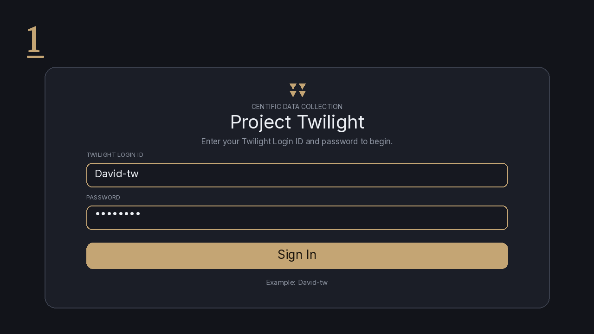
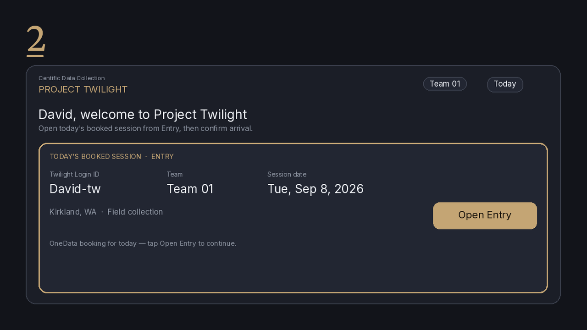
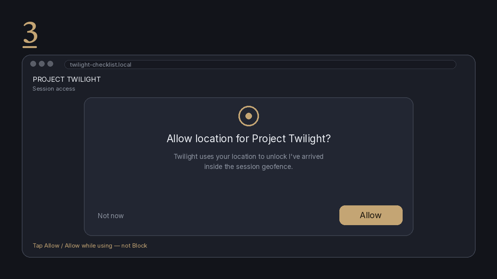
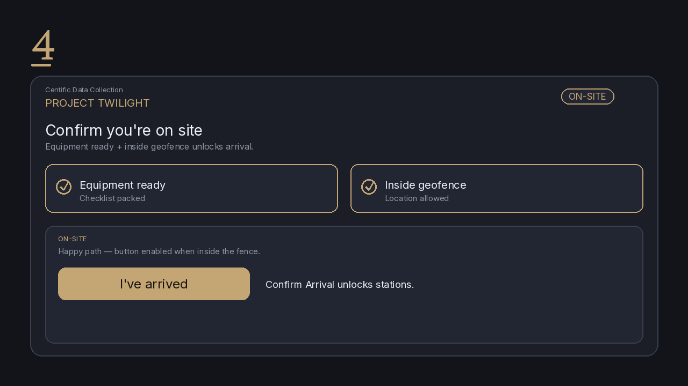
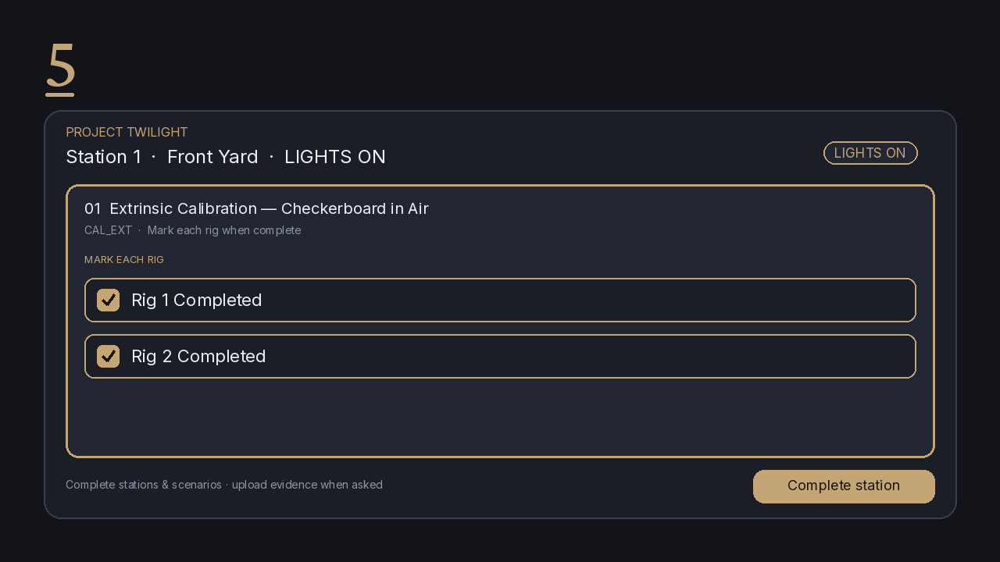
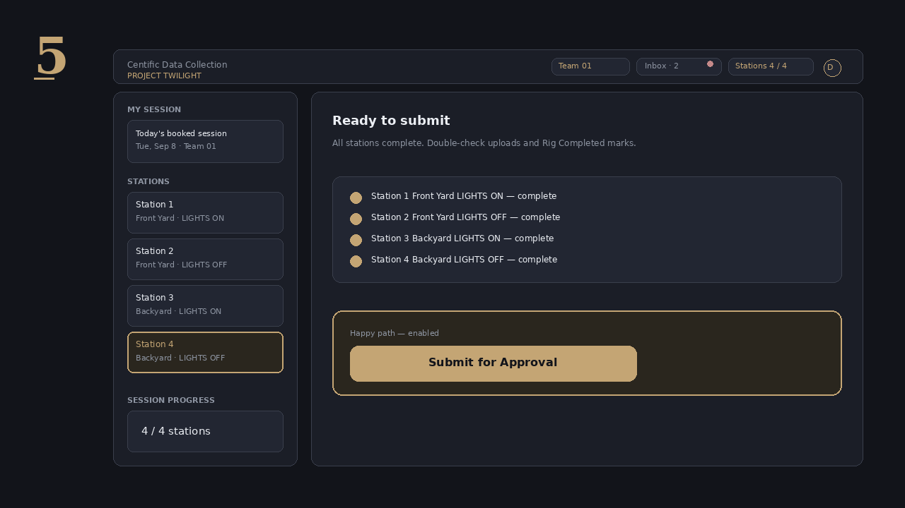
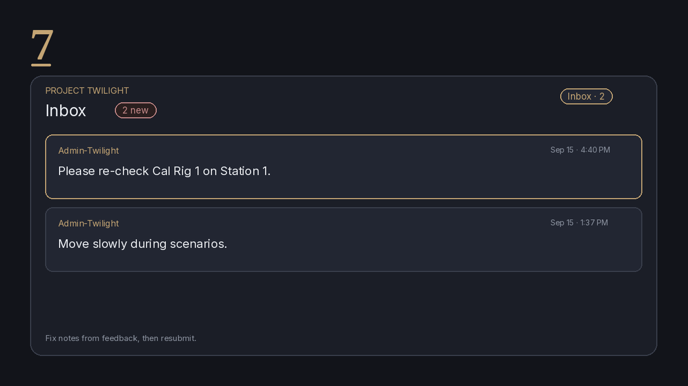
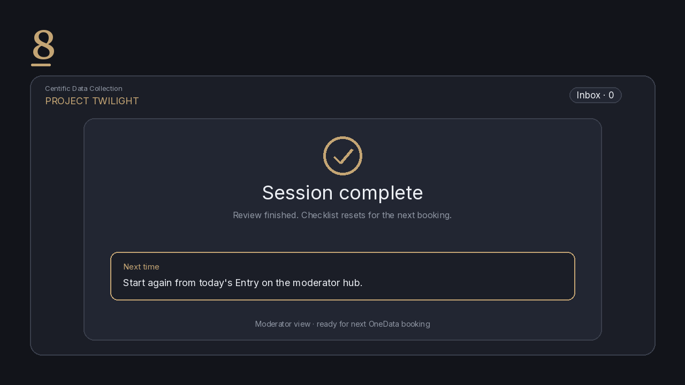

Twilight Checklist
Stations and scenarios for a booked session — super simple, end to end.
Moderator guideWelcome
This moderator guide walks you through stations and scenarios for a booked session — confirm you’re on site, complete the work, upload evidence when needed, then submit for approval.
Use the tabs above:
- How to use — the moderator flow from sign in to session end
- Panic — the red Panic button (bottom-right) for Teams, troubleshooting, and escalation
- Tips — moderator notes on geofence, location, Inbox feedback, and Panic practices
What you need
- Your Twilight Login ID (e.g.
David-tw) - A booked session for today (bookings come from OneData)
- Location permission in the browser — required for I’ve arrived / Confirm Arrival; see How to use Step 3: Enable location
That’s it. Open the web app, sign in, and follow How to use. Keep the Panic button in mind if you need help or must escalate.
How to use (super simple)
Moderator path from sign-in to session end. Follow these like a recipe, one step at a time — eight steps total.
1 Sign in with Twilight Login ID
Open Twilight Checklist and sign in with your Twilight Login ID (for example David-tw). Use the same ID every time so your sessions and history stay with you.

Step 1 — Sign in with Twilight Login ID (David-tw)
2 Open today’s booked session / Entry
Pick today’s booked session and open Entry. If nothing shows up, check that OneData has a booking for you today.

Step 2 — Open today’s booked session / Entry
3 Enable location
Twilight needs your device location so I’ve arrived can unlock when you’re inside the session geofence.
- When the browser asks, tap Allow / Allow while using — not Block.
- If you already blocked it, reopen site settings for Twilight → Location → Allow, then reload. iPhone Safari: aA / website settings → Location. Chrome: lock icon in address bar → Site settings → Location.
- Stay near the booked address; outside the fence the button stays disabled even with location on.

Step 3 — Enable location (Allow permission, then stay inside the geofence)
4 I’ve arrived (Confirm Arrival)
Confirm you’re ready: equipment set and you’re inside the geofence. The live button label is I’ve arrived (ON-SITE). It enables for Confirm Arrival when location reports inside the fence — allow location access if the browser asks.

Step 4 — I’ve arrived enabled (equipment ready + inside geofence)
5 Work Stations & scenarios
Open each station and complete its scenarios. On calibration stations, mark Rig 1 / Rig 2 Completed. Upload evidence where the scenario asks for it.

Step 5 — Stations & scenarios; Rig 1 / Rig 2 Completed
6 Submit for Approval
When every station is ready, tap Submit for Approval. Double-check uploads and Rig Completed marks before you send.

Step 6 — Submit for Approval
7 Watch Approval / Inbox
Keep an eye on Approval / Inbox for reviewer feedback. If something is sent back, fix the notes and resubmit.

Step 7 — Moderator Inbox feedback
8 Session end
After review is complete, the session resets for the next booking. You’re done — next time, start again from today’s Entry.

Step 8 — Session complete; reset for next booking
Next
Learn the Panic button
Red — Teams, troubleshooting tips, and escalation tiers
Panic button
The red button sits bottom-right on moderator chrome and is always available. Tap it for help: Teams with managers, troubleshooting tips, and emergency escalation tiers.
1 Find / open the Panic button
Look for the red circular button in the bottom-right of the moderator UI. Tap it to open the Panic menu.

Step 1 — Live app: red Panic button (bottom-right)
2 Open Comm (Teams)
In the Panic menu, tap Comm to open the managers Teams chat. When the flow prompts you, notify managers in Teams immediately.

Step 2 — Live app: Panic menu (Comm · Troubleshooting · Emergency)
3 Troubleshooting Tips
Use Troubleshooting Tips for network problems (Eero bridge, Xfinity, cameras to home WiFi as a last resort), night-specific issues, and FAQ answers — before you escalate.

Step 3 — Live app: Troubleshooting Tips
4 Escalation tiers overview
Emergency · Escalation Tiers has four levels. Pick the one that matches the situation:
- Handle it yourself — routine session flow, scripted steps, or normal setup you can resolve
- Flag in real time — neighbor confrontation, police arriving, unworkable environment, intoxicated participant, inappropriate conduct toward you, or a participant in visible distress
- Report afterward (same night) — canceled or cut-short session, withdrawal request, complaint from participant/neighbor, equipment damage
- Escalate immediately — notify the project manager directly (see next step)

Step 4 — Live app: Emergency · Escalation Tiers
5 Escalate immediately options
Use Escalate immediately (and notify the project manager directly) for: police contact of any kind, lost/corrupted capture, a consent-form demand you can’t answer, allegation of misconduct, or harm / threat of harm.
- Contact Police — call 911 if there is danger
- Data Loss — lost or corrupted capture
- NDA / Consent Question — consent-form demand you can’t answer
- Misconduct Report — Environment or Teammate

Step 5 — Live app: Escalate immediately options
Tips & extras
Short moderator notes and caveats that save time.
Location
Allow location permission so I’ve arrived can unlock. If you denied it, reopen site settings for Twilight → Location → Allow, then reload.
- iPhone Safari: aA / website settings → Location
- Chrome: lock icon in the address bar → Site settings → Location
- Stay near the booked address: the geofence still controls the button, so it remains disabled outside the fence even when location is on.
Moderator caveats
- Geofence is required for I’ve arrived (Confirm Arrival) — the button stays off until you’re inside
- OneData drives bookings; no booking means there’s nothing to open today
- Location permission must be allowed and shared so I’ve arrived / Confirm Arrival can unlock
- Check Inbox for feedback and fix notes before resubmitting
- Don’t open the bot-only Excel sync workbook — it’s not for day-to-day use
Panic button — common practices
Quick escalation guidance. Full walkthrough: Panic.
- Handle yourself for routine or scripted issues you can resolve on site.
- Flag in real time for safety, conduct, police on scene, or an unworkable site.
- Report same night for cancel/withdrawal, complaints, or equipment damage.
- Escalate immediately + notify the PM for police contact, data loss, consent dead-ends, misconduct, or harm/threat. Call 911 if in danger. Use Teams to notify managers when prompted.